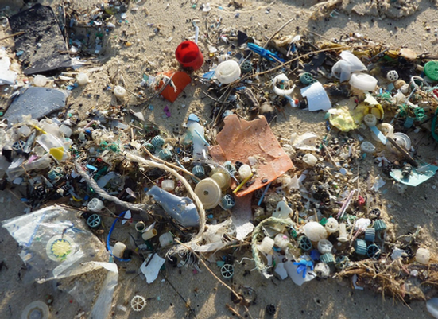

Elas não estão nos mapas, mas nos nossos oceanos existem cinco ilhas de plástico flutuante que ameaçam com acabar com boa parte da vida marinha, afetando as mudanças climáticas. Algumas destas manchas de lixo — como a do Pacífico Norte — têm uma superfície como a França, Espanha e Alemanha juntas.
Estas gigantescas concentrações de lixo estão formadas majoritariamente por microplásticos de menos de cinco milímetros que flutuam no interior das correntes rotativas e ficam presos nestes imensos redemoinhos, agrupados pelas correntes internas. O resultado disso é que as cinco maiores ilhas de plástico do mundo coincidem com os principais vórtices oceânicos: os dois do Pacífico, os dois do Atlântico e o do Índico. Também há ilhas de plástico em outros mares do planeta, como o Mediterrâneo ou o do Caribe, embora sejam muito menores e dispersas que as anteriormente mencionadas.
Plásticos são materiais orgânicos sinteticamente produzidos e seu tempo de degradação pode atingir até 450 anos. Isso significa que o descarte inapropriado de plásticos nos mares transforma os oceanos em grandes depósitos naturais dessas substâncias, desencadeando uma série de problemas ambientais relacionados aos ecossistemas e às diversas interações tróficas entre os organismos, as quais podem percorrer durante séculos. O problema é que esse tipo de poluição não é sempre visual: 70% de todo plástico lançado nos oceanos afunda, aglomerando-se no substrato marinho. Segundo o Greenpeace, estima-se que 110 pedaços de lixo por quilômetro quadrado ficam disponíveis nos fundos dos mares.